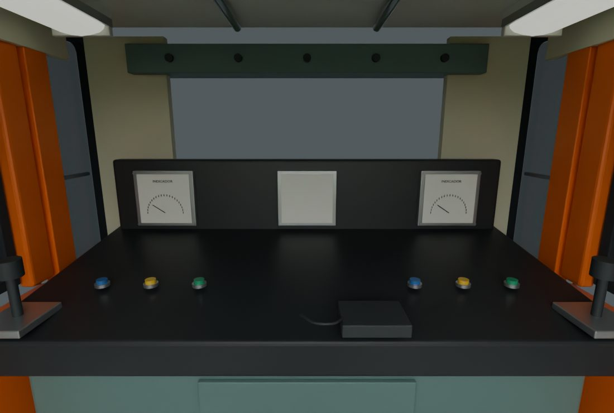
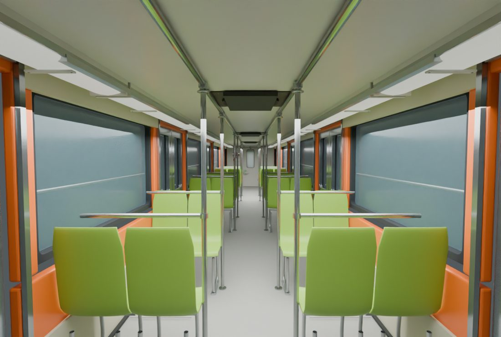
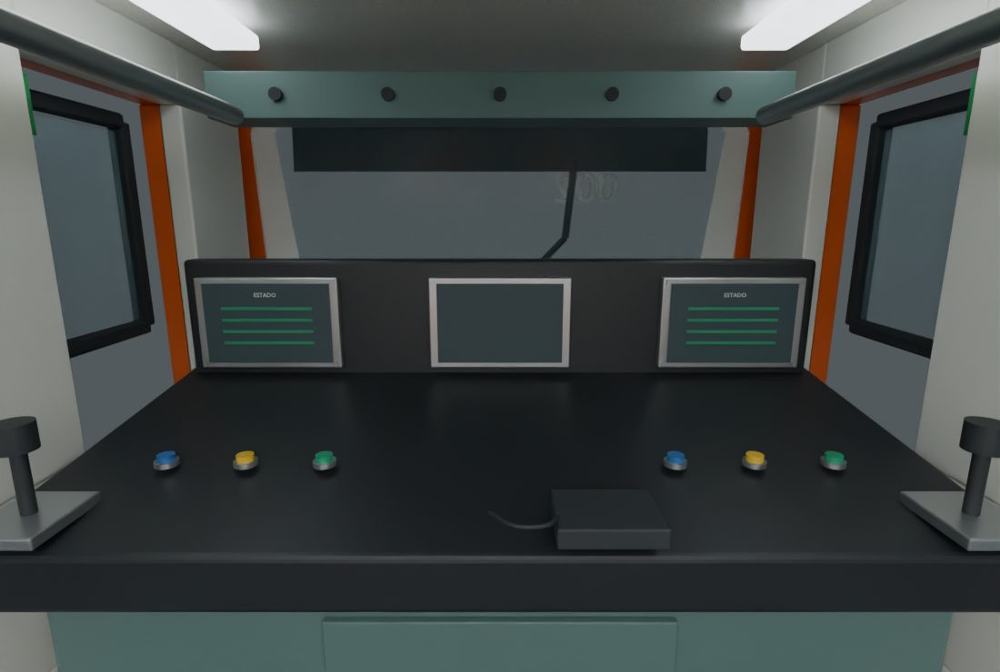
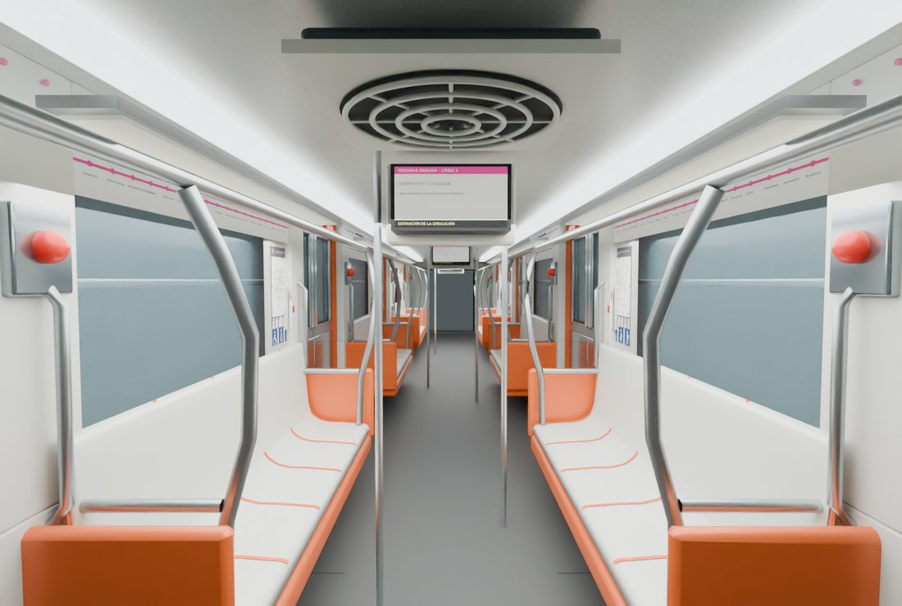
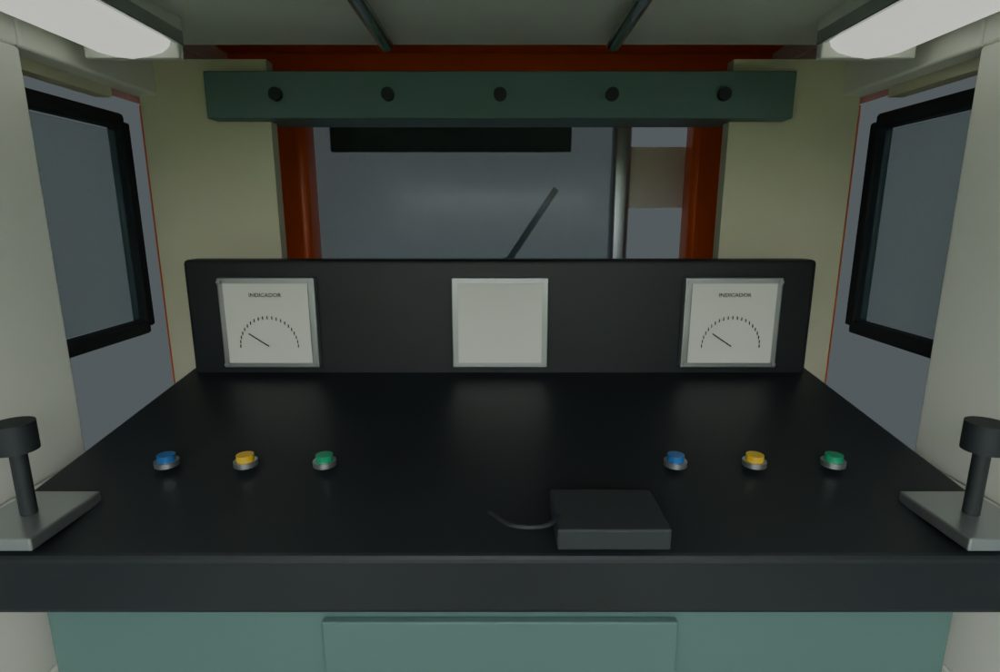
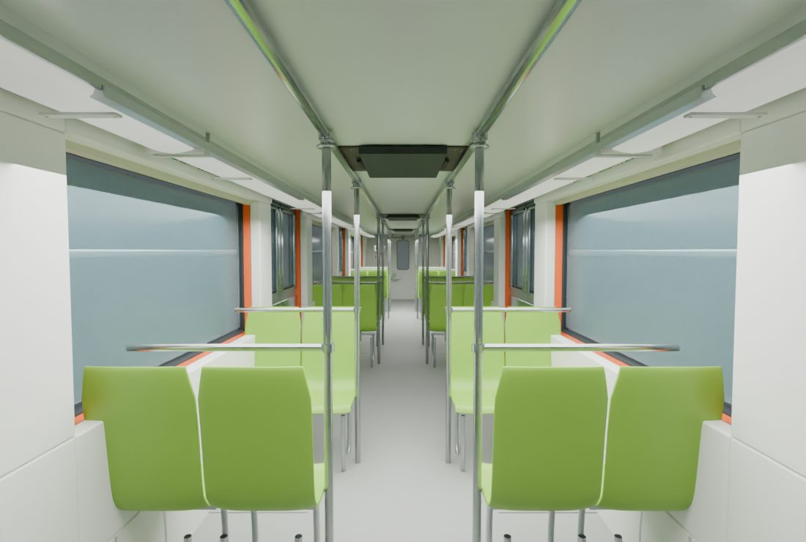
Revisión 147 · Línea 1 y Línea 8
Asientos verdes con carcasa continua y bastidor independiente, umbrales, pupitres y velocímetro conectado a la simulación. Portada y navegación reorganizadas.
Las consolas son adaptaciones visuales. Las referencias modernas de Línea 12 y el video identificado como NM-16 se distinguen de las consolas clásicas de Línea 8. No se certifica una réplica exacta ni se añade Línea 12.
Alcance, referencias y verificaciones detalladas
La pantalla central se conecta a la velocidad durante la ejecución; estos renders no incluyen el Canvas de la simulación.






La primera captura muestra el defecto anterior. Las demás se conservan para comparar asientos y pupitres.
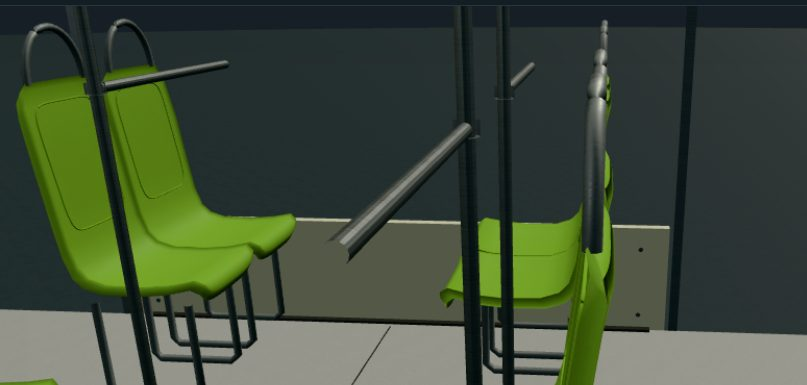
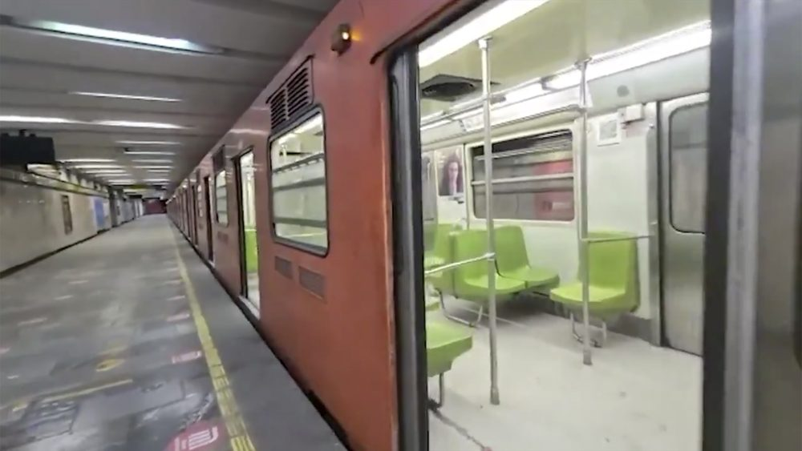
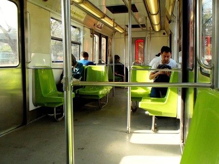
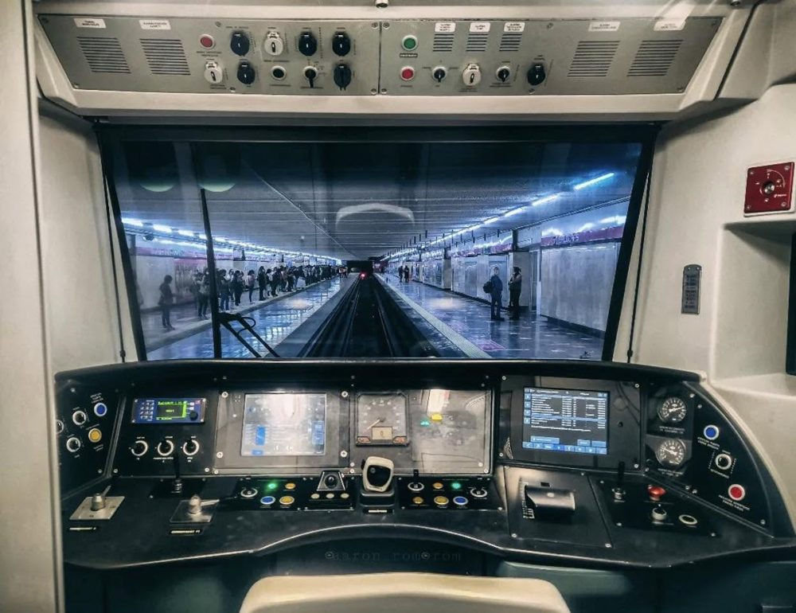
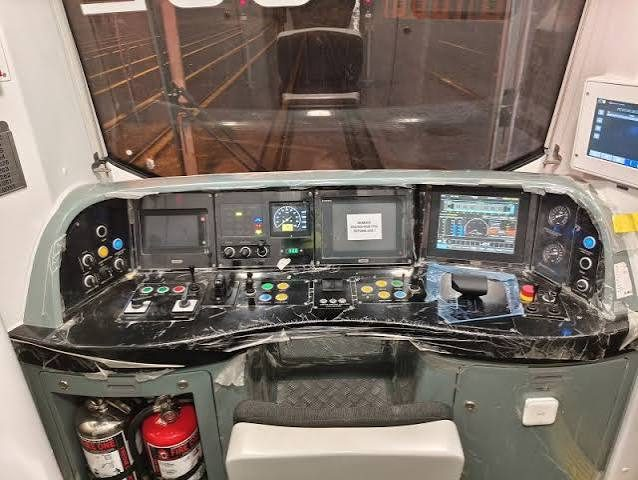
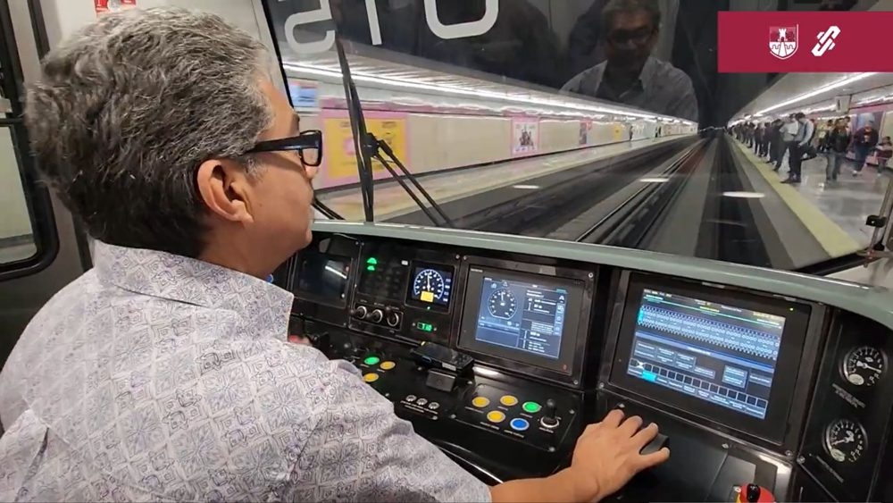
Verificación por Blender, carga CPU y DOM; pendiente revisión visual interactiva en navegador/WebGL.